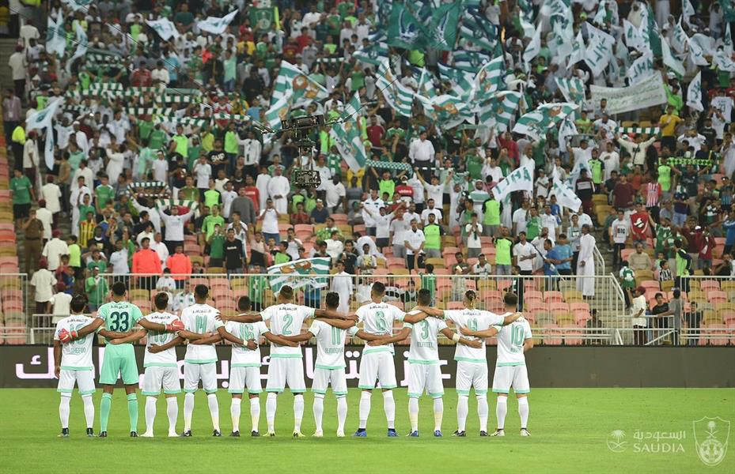

| رابط للصفحة الرئيسية |
النادي الاهلي 85 عام من الانجازات والبطولات
لنادي الأهلي الرياضي السعودي هو نادٍ يضم عدة ألعاب مختلفة بالإضافة إلى فرق كرة القدم بجميع فئاتها. يوجد مقره في مدينة جدة غرب السعودية. تأسس في 17 مارس 1937، وهو النادي الوحيد الذي جمع الدوري وكأس الملك وكأس السوبر في موسم واحد (2016)، يلقب في البطولات العربية بأهلي جدة تفريقاً بينه وبين فرق الأهلي العربية العديدة. يسمى من قبل مشجعيه بالملكي وكما أطلق عليه الأمير سلطان بن فهد بن عبد العزيز آل سعود الرئيس السابق للاتحاد العربي السعودي لكرة القدم لقب الراقي ويلقب كذلك بقلعة الكؤوس

ابرز الاعبين
- عمر السومة
- عبدالرحمن غريب
- دانكليير
- اليوسكي
- علي الاسمري
- محمدالعويس
بطولات النادي الاهلي
: كأس خادم الحرمين الشريفين ( 13 ).
: كأس ولي العهد السعودي :( 6 ).
: الدوري السعودي الممتاز ( 3 ).
: كأس السوبر السعودي :( 1 ).
:كأس الأمير فيصل بن فهد ( 5 ).
: كاس المنطقة الغربية ( 11 ).
:كأس الخليج للأندية ( 3 ).
:كأس الاتحاد العربي للأندية ( 1 ).